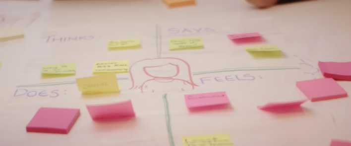
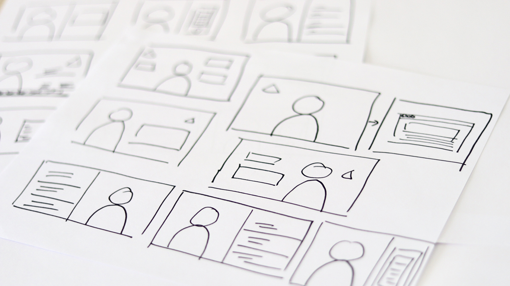
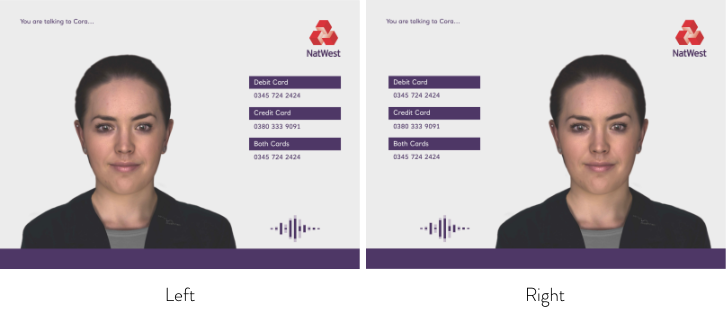
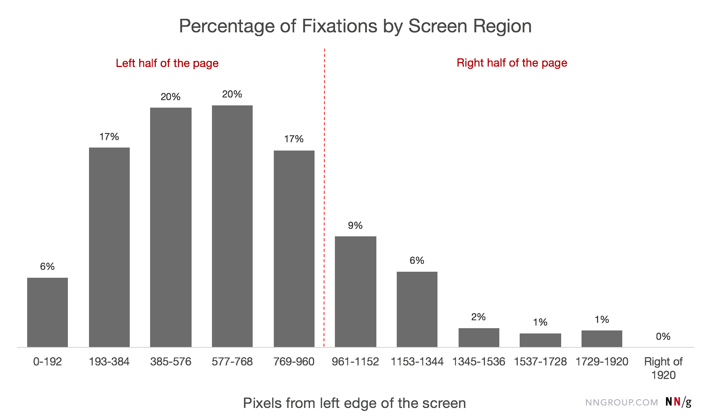
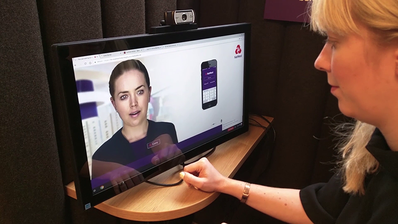
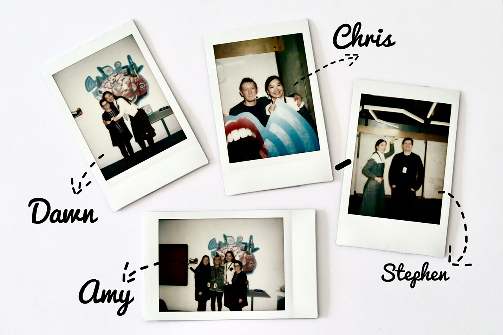

Cora - Natwest’s Digital Human Customer Agent
Role: UX UI Designer | Team: 1 UX researcher + 1 UX Designer + 2 Engineers + 1 Manager | Duration: 3 Months
OVERVIEW
This is a case study for a project I participated in as a solutions innovative designer at Royal Bank of Scotland’s innovation center - Open Experience. We collaborated with teams from Soul Machines (providing human face engineering), IBM Watson (supporting AI) and Lightmaker (development). The team in Open Experience was formed by a project manager Steve Lewis, a UX researcher Seamus Forde , engineers Alan Yuill and Martin Saich and designer me. My role evolved in this project included user research, identity design, organizing design workshops with departments in the bank, conversation journey mapping, user experience, and user interface design.
THE PROBLEM
Customers get confused when they phone the customer service for help with their banking problems, especially when the answer involve using their mobile banking and website.
THE SLUTION
Using Soul Machines’ digital human technology with IBM Watson AI service to provide a digital customer agent experience along with on-screen demonstration to guide customers through their digital banking problems.
EMPATHIZE
This project was driven by the spirit of design thinking to test out human-faced artificial intelligence technology for the next generation customer service in banking. Using digital human as customer service agent has many benefits over conversational chatbots. At the same time it can also raise more questions. To avoid the uncanny valley, we had to empathize with users to find out where digital human can be used to help increase customer satisfaction rather than discomfort.

To start with, we looked into the most asked questions online and over the phone. These are the questions we wanted to consider solving with our digital human agent. For each problem, people phrased and expressed differently. These data are important for the AI to be trained to detect questions and identify the category. With IBM Watson team, the answers can be triggered when people ask questions in a similar manner wiht keywords and collocation in the database. For the internal team, looking into customer service phone call recordings and online chat records have also helped us to empathize with users and understand how people state the problems and get help.
After comparing the most-asked problems from customers with our technologies' capacities, we chose four problems to work with for the first phase of the project. These problems include:
- Log in issues
- make a payment
- lost cards
- travel plan
The way that customers phrased their problems in words or stated them in voice also reflected how they felt at the time. As mentioned before, we could empathize with them to understand what kind of senarios they were in. We tried to understand what they said, what they did, what they thought and how they felt. That really helped us to know how we could guide them through the problem with the technologies available in this project.
Define
With the research on users, and technologies we want to test, we reached the objective:
How Might We answer customers' questions effectively to improve satisfaction and experience.
From the research, we worked out the keywords and sentences for the problems to trigger the issues in AI which was handed over to IBM team to deploy. The next step was to figure out how to let the digital agent talk to the customers in the way that not only mimics human-human conversation but also solve the problem. We held workshops with a team from customer service department to generate human-human conversations for the digital agent. It is very important to avoid the uncanny valley. Then we tested the scripts with people in the workshops.
To both solve their problems and improve our customer' satisfaction we have to ideate ways to help them through their questions. Sometimes a picture is worth a thousand words. With the technologies we have, we can demonstrate not only in img but also other multi-media formats. Thus we have a very broad context to ideate and prototype for the solutions.
DESIGN
One thing that we usually don't get to design but had to design in this project was our customer agent. What kind of customer agent would you trust and turn to help? With Soul Machines we have quite a few options to choose from and redesign the identity. Thus we held an identity workshop to identify how our agent will look. We had to decide the following idetities for the agent:
- gender
- face
- clothing
- hairstyle
To decide these, we held a workshop to brainstorm and decide what kind of identity works best with our objective. To help us brainstorm, we imagined our agent as a car, food, drinks, and etc. If the agent was a car, what kind of car it would be. And we tied it closely with our NatWest brand identity. In the end we voted Rachel from Soul Machines' model database as our agent, and we decided the hairstyle and the clothes for the model to look professional and trustworthy.
With the technologies we had, we have a lot to experiment with. We could even demonstrate the steps visually for the users to walk through the problems they encountered. But it’s also very easy to overwhelm them with too much information. We came up with a few combinations that will solve users’ problems. From sketch on a piece of paper to the screen, we explored different displays of the infomation and combination wiht the digital human agent.
Prototype
For our first external deployment, we aimed to test it with a web browser on a PC. Firstly we needed to prototype the interface of demonstrating information with the agent in the same screen. From Soul Machines' examples, they have been placing the agent mostly in the center of the screen. As we planned to display screens to guide users through their problems, we prototyped a few ways to display the information with the agent in the screen. One of the problem we have to test was either placing the avatar on the left or right.
To decide we did both A/B Testing and research on the fixations on the screens. From research we found that people's attention leans on the left half of the page. They both suggested of placing the avatar on the left. Thus we decided to place the avatar on the left side of the screen so people would feel more comfortable while paying attention to communicating with the avatar. As the majority attention people would pay while communicating with Cora will be on herself rather than the information displayed.
Another part of the interface that we needed to prototype was the background. In order to show the authenticity of the bank's agent, we discovered that it's best to place her with a background of a real branch. We tried a few different branch photos and even went out to take photos in our Natwest branches. In the end we chose one with Natwest's primary color decorations. However, the branch background created legibility issues with with the guidance information. Through a few prototypes we ended up using white background for displaying guidance and a blending transition between the white background and branch background for the avatar.
TESTING
Testing was an inportant part of the project. We actually have been testing throughout all phases of the projects. From internal team members to actual branch in the highstreet. Testing has helped us to make many crucial decisions and changes. We have done A/B Testing, Moderated Usability Testing, Beta Testing, Surveys and so on.
Collaborating with three external teams gave us a broader employee testing group. Accessing the same content through different backgrounds gave us perspectives that we might not think of. All the four teams have tested many times to ensure their parts work well with each other. And other teams in our department were very excited to test our new prototypes.
In December 2017, we did a Beta-Testing in one of our high street branch in Liverpool. We received many meaningful feedbacks and users who participated enjoyed their interaction wiht Cora very much. The testing results we received were very possitive.
REFLECTIONS
During my time at Open Experience, I have learned so much from my teammates and managers. They were mentors, examples and family to me. I'm extremly grateful for the opportunity to have worked in such a great team and met these wonderful people. Looking back at the project, there are so much I would do differently with more experience and knowledge in UX. But I learned a lot from this project.